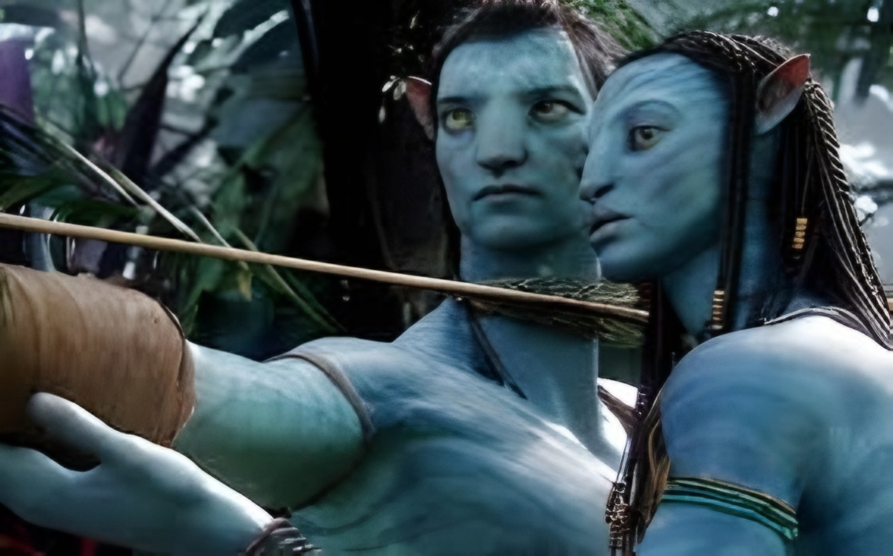
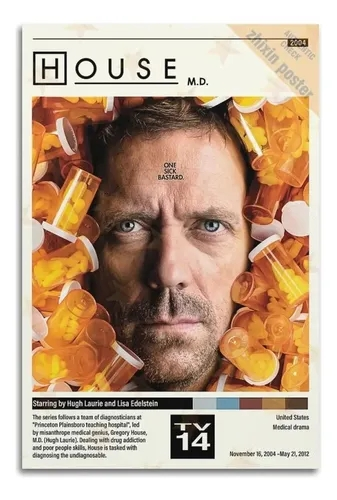
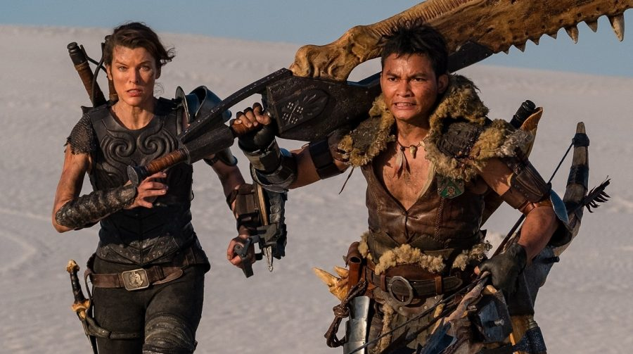
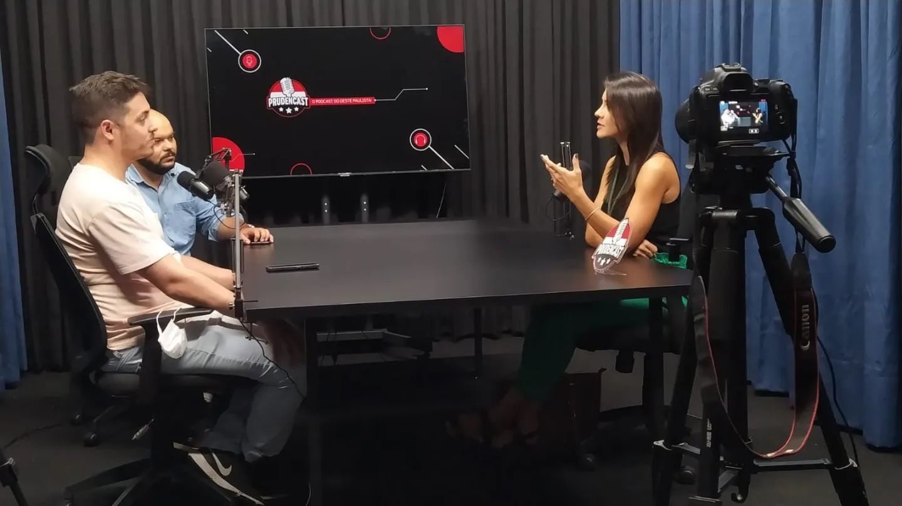
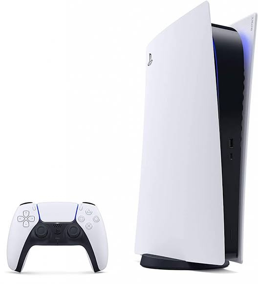
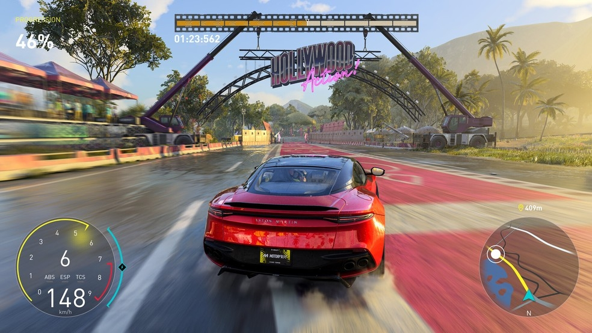
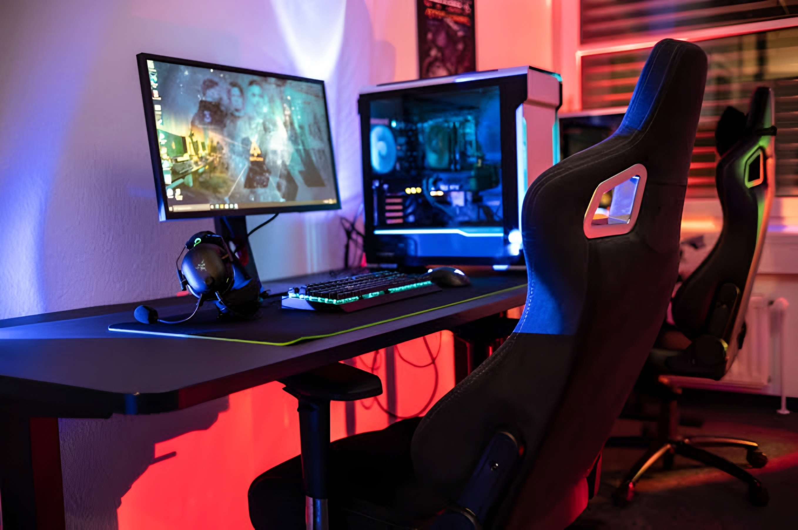

Filmes, músicas, podcasts, games e tecnologia em um só lugar!



O universo audiovisual está em constante expansão. Com o streaming, temos acesso a produções do mundo inteiro, de dramas premiados a ficções científicas cheias de efeitos especiais.

Músicas e podcasts acompanham nossa rotina. Plataformas digitais permitem descobrir artistas independentes e ouvir episódios sobre os mais variados temas, de tecnologia a história.



A indústria dos games movimenta bilhões e impulsiona avanços tecnológicos, como placas de vídeo, realidade virtual e jogos em nuvem. É diversão e inovação caminhando juntas.